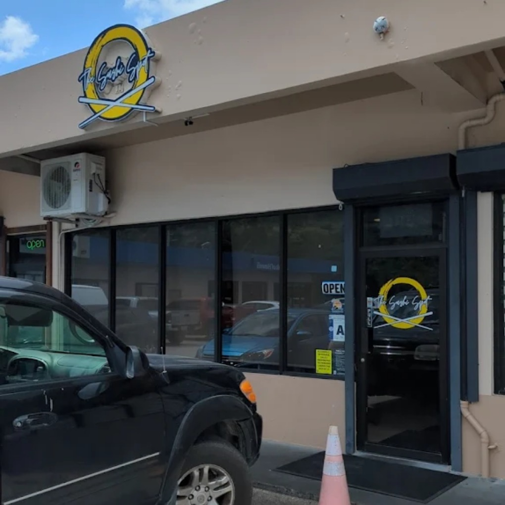

I don't eat out often, even with my family. On the rare occasions that we do, we would
usually visit restaurant that we know or frequent. These three restaurants my personal
favorites out of all the ones I have been to.
Garapan Restaurant
Garapan Restaurant is a rather nostalgic place for me.
Because it was located near my huose and I had initially
taken a liking to it, my family often took me there for splurge occasions.
I only ever ordered one dish during all my visits there, that being their karaage.
That still holds true today, and it forever will because they have unfortunately closed
down, leaving my memories as the only place I can revisit it.
Menu consists of:
Korean barbecue
Island fusion dishes
Donburi meals
etc.
New Shinsen Sushi Restaurant
New Shinsen Sushi is a sort of evolution from Garapan Restaurant. My dad had worked Shinsen
for a short period of time, which made it a far more convenient dining option for our splurges.
This time, I had grown out of my phase of ordering the same item each time, so I took the
opportunity to try all of their amazing dishes, from their sushi to their bentos.
Menu consists of:
Sushi and sashimi
Bento sets
Hot plates
etc.
The Sushi Spot

The Sushi Spot is a recent endeavor that completely blew all my other experiences
out the water. I had visited the restaurant with a rather large group, which made
for a rather rowdy but lively atmosphere. The food itself complimented the experience since
large platters of different kinds of sushi called for lots of sharing and interaction. This
made for an incredibly fun and filling dining experience, and I could not have asked for more.